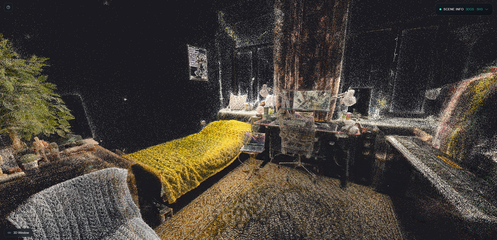
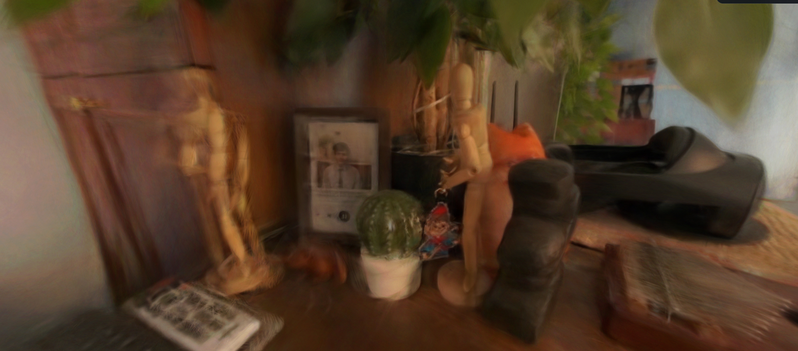

Новый этап в сохранении реальности
Фотография фиксирует один ракурс. Видео сохраняет движение во времени. Однако оба формата остаются плоскими: зритель видит сцену так, как её увидела камера в конкретный момент. Современные технологии 3D-реконструкции предлагают другой подход — восстановление пространства целиком. Одной из самых обсуждаемых технологий последних лет стала Gaussian Splatting.
Если упростить, Gaussian Splatting позволяет построить реалистичную трёхмерную модель сцены на основе обычных фотографий или видеозаписей. Пользователь получает не просто изображение, а объёмную среду, которую можно рассматривать с разных точек зрения. Для задачи сохранения воспоминаний это означает переход от снимка к пространственной памяти.
Что такое Gaussian Splatting
Метод был представлен исследователями Inria в 2023 году и быстро получил распространение в профессиональном сообществе [12][13]. Его основная идея заключается в том, что сцена представляется не привычной полигональной моделью, а набором трёхмерных гауссовых «пятен» – небольших объёмных элементов, описываемых математическими распределениями.
Каждый такой элемент хранит информацию о положении в пространстве, размере, форме, цвете и прозрачности. Вместо построения жёсткой сетки из треугольников алгоритм оптимизирует параметры множества этих элементов так, чтобы при проекции на плоскость камеры они совпадали с исходными фотографиями [14].
В результате получается плотное облако цветных объёмных компонентов, которое при визуализации выглядит как цельная сцена с глубиной, светом и текстурой.

Почему метод оказался важным
До появления Gaussian Splatting одним из ключевых направлений в реконструкции сцен были Neural Radiance Fields (NeRF). Эти методы использовали нейронные сети для аппроксимации того, как сцена выглядит с разных ракурсов. Качество было высоким, но рендеринг часто требовал значительных вычислительных ресурсов.
Gaussian Splatting предложил альтернативу, сочетающую точность и высокую скорость визуализации. После этапа оптимизации полученную сцену можно отображать в реальном времени, что делает технологию пригодной для интерактивных приложений, включая VR и AR [12][14].
Именно скорость и относительная простота рендеринга сделали метод заметным шагом вперёд в развитии 3D-реконструкции.
Принцип работы на практическом примере
Представим, что у нас есть несколько десятков фотографий комнаты, снятых с разных углов. Алгоритм анализирует изображения и определяет, как распределить в пространстве тысячи маленьких гауссовых элементов так, чтобы при виртуальном «взгляде» из каждой исходной позиции получалось изображение, максимально близкое к фотографии.
Каждый элемент можно представить как полупрозрачное цветное облачко. Вместе они формируют структуру сцены. При смене ракурса система пересчитывает вклад каждого элемента в итоговое изображение, создавая эффект объёма.
Таким образом, сцена не хранится как набор плоских кадров, а как непрерывная пространственная структура.
Возможности технологии
Gaussian Splatting способен восстанавливать сложные сцены с высокой степенью реализма. Он хорошо работает с нерегулярными структурами — листвой, травой, деталями интерьера — которые трудно точно описать традиционной полигональной моделью [12].
Метод масштабируется: возможно реконструировать как небольшие объекты, так и более крупные пространства, например помещения или фрагменты городской среды. Благодаря высокой скорости рендеринга такие сцены можно просматривать интерактивно.
Для задач сохранения воспоминаний это означает потенциальную возможность фиксировать не только изображение события, но и его пространство. Например, при достаточном количестве фотографий можно создать трёхмерную копию комнаты, в которой проходил важный момент жизни, и впоследствии «пройтись» по ней виртуально.
Ограничения и технические сложности
Несмотря на впечатляющие результаты, технология имеет ограничения. Построение сцены требует значительных вычислительных ресурсов, особенно при большом количестве исходных изображений [14]. Размер итоговой модели может быть достаточно крупным, что создаёт требования к памяти.
Кроме того, возможны артефакты: при недостатке данных или сложных световых условиях отдельные элементы могут отображаться некорректно. Динамические сцены — с движущимися объектами — требуют дополнительных модификаций алгоритма [14].
Тем не менее метод активно развивается, появляются улучшенные версии и расширения.

Пространственная память и новые формы архива
С точки зрения культурной практики Gaussian Splatting интересен не только как инженерное решение, но и как новый формат сохранения прошлого. Если фотография фиксирует момент, а видео — последовательность моментов, то трёхмерная реконструкция сохраняет пространство события.
Это меняет характер воспоминания. Пользователь может сам выбирать ракурс, обращать внимание на детали, которые не были в центре внимания в момент съёмки. Архив становится интерактивным.
Подобный подход перекликается с развитием устройств пространственной записи, таких как системы, поддерживающие «spatial video» [10]. Постепенно появляется возможность сохранять не только изображение, но и ощущение присутствия.
Будущее технологии
Можно предположить, что со временем методы трёхмерной реконструкции станут частью массовых устройств. Если процесс захвата и обработки упростится, создание 3D-сцен может стать таким же обычным действием, как сегодня съёмка фотографии.
Это открывает новые вопросы. Станет ли воспоминание более точным или, наоборот, более зависимым от технической интерпретации? Изменится ли эмоциональное переживание прошлого, если к нему можно «вернуться» в пространственном формате?
Пока эти вопросы остаются открытыми. Однако уже сейчас очевидно, что Gaussian Splatting представляет собой важный шаг в эволюции способов сохранения реальности. От плоского кадра к объёму — так постепенно меняется форма нашей памяти.